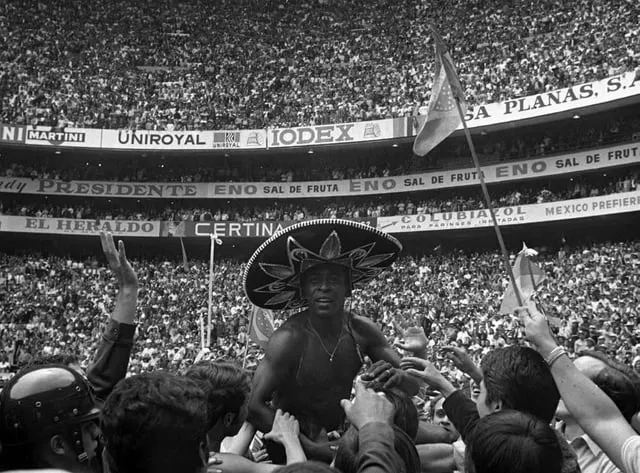
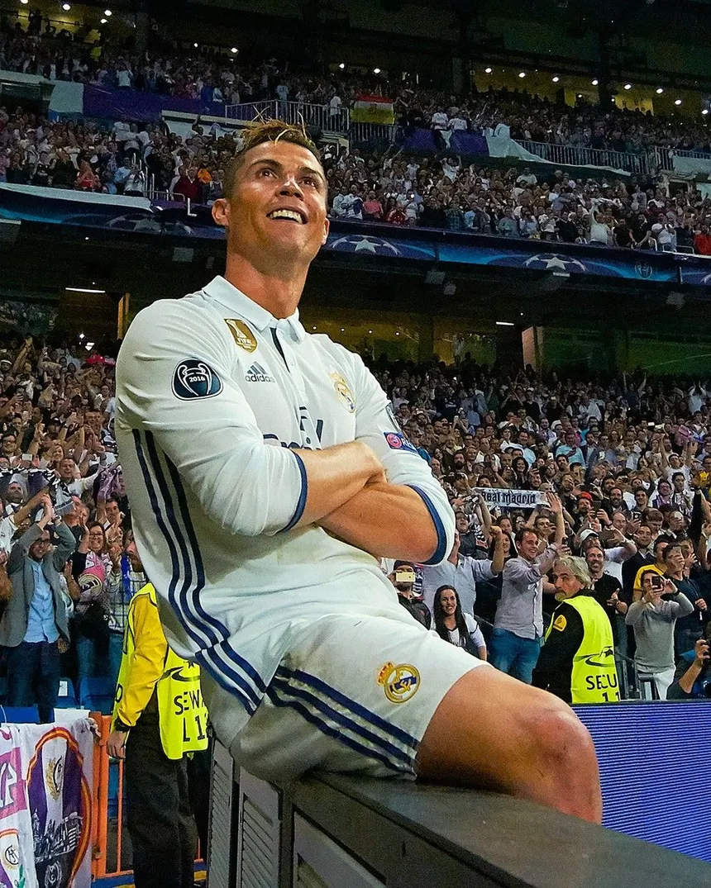
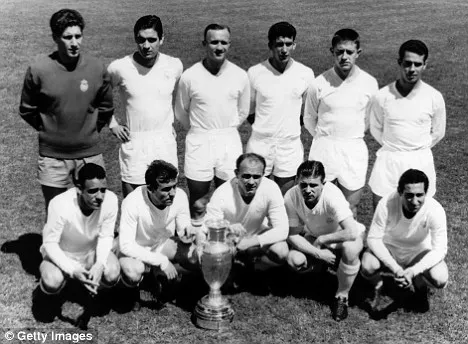
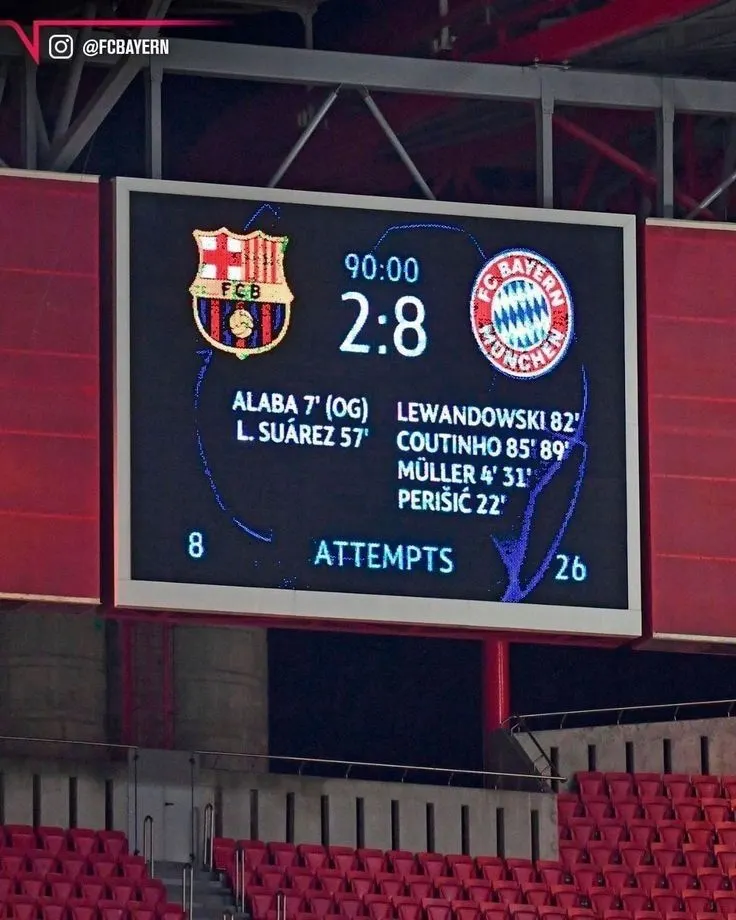
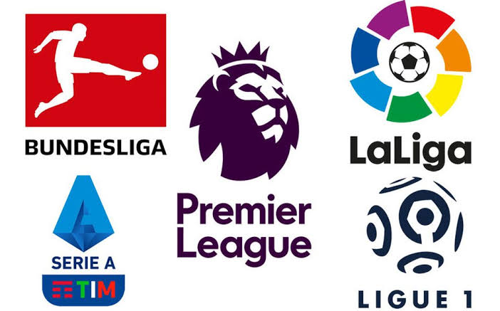
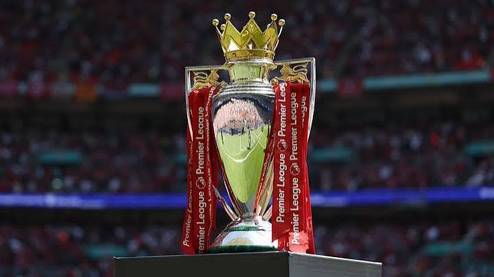

La Copa del Mundo de la FIFA es el torneo de fútbol más importante del mundo, organizado por la Federación Internacional de Fútbol Asociación (FIFA), fundada en 1904. Su primera edición se celebró en Uruguay en 1930, donde la selección local se coronó campeona. Desde entonces, el torneo se disputa cada cuatro años y reúne a las mejores selecciones nacionales.
Brasil es el país con más títulos, con cinco Copas del Mundo, seguido de Alemania e Italia, con cuatro cada una, y Argentina, con tres. En cuanto a los jugadores, el brasileño Pelé es el único que ha ganado tres Mundiales como futbolista, en 1958, 1962 y 1970.
Por otro lado, el alemán Miroslav Klose fue el máximo goleador histórico con 16 tantos, hasta que Kylian Mbappé lo superó en 2026 y estableció el récord con 22 goles. La Copa del Mundo es considerada el torneo más importante del fútbol por su alcance internacional, su historia y el orgullo que representa para los países participantes.

La UEFA Champions League, conocida como la Liga de Campeones, es el torneo de clubes más importante del fútbol europeo. Fue creada en 1955 bajo el nombre de Copa de Europa y en 1992 adoptó su nombre actual. En esta competición participan los mejores equipos de las ligas europeas, que buscan convertirse en campeones del continente.
El Real Madrid es el club más ganador de la historia del torneo, con 15 títulos hasta 2024. Entre los jugadores más destacados se encuentra Cristiano Ronaldo, quien es el máximo goleador histórico de la competición y uno de los futbolistas con más títulos. La Champions League es considerada una de las competiciones más prestigiosas del fútbol por su nivel competitivo, sus grandes estrellas y la emoción de sus partidos.



Las cinco ligas más importantes del fútbol europeo son la española, la inglesa, la italiana, la alemana y la francesa. LaLiga de España se fundó en 1929 y destaca por equipos como el Real Madrid y el Barcelona. La Premier League de Inglaterra comenzó en 1992 y es reconocida por su competitividad y clubes como el Manchester United, Liverpool y Manchester City. La Serie A de Italia, cuyo formato nacional se estableció en 1929, cuenta con equipos históricos como la Juventus, el Milan y el Inter.
La Bundesliga de Alemania se creó en 1963 y es conocida por el Bayern Múnich y su gran afición. Por su parte, la Ligue 1 de Francia comenzó en 1932 y ha destacado por clubes como el Paris Saint-Germain y el Olympique de Marsella. En México, la Liga MX es la principal competición profesional de fútbol y cuenta con equipos populares como el América, Chivas, Cruz Azul y Pumas. Todas estas ligas son importantes por su historia, sus grandes jugadores y la pasión que generan entre los aficionados.

